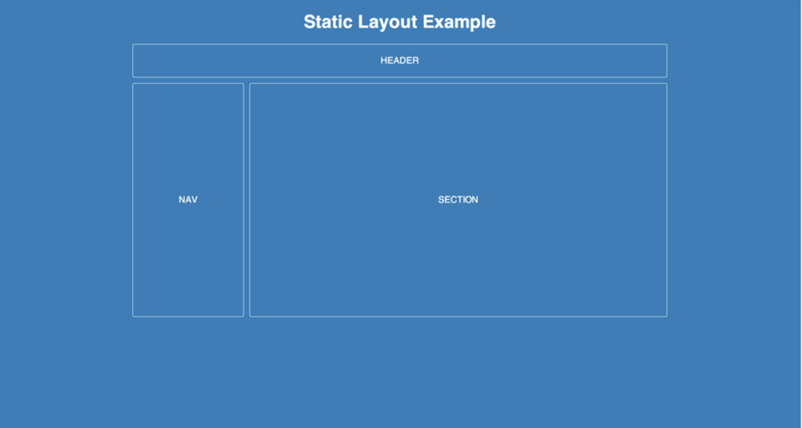
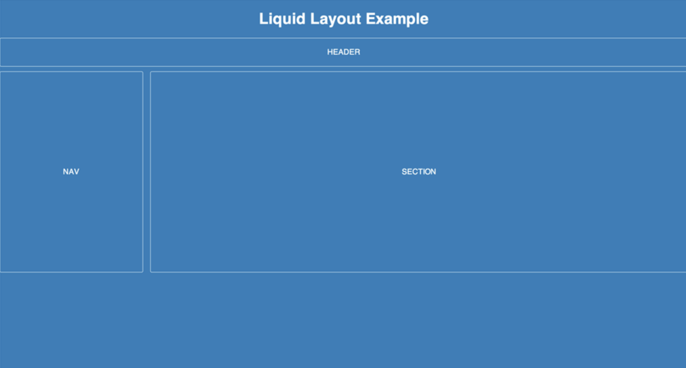
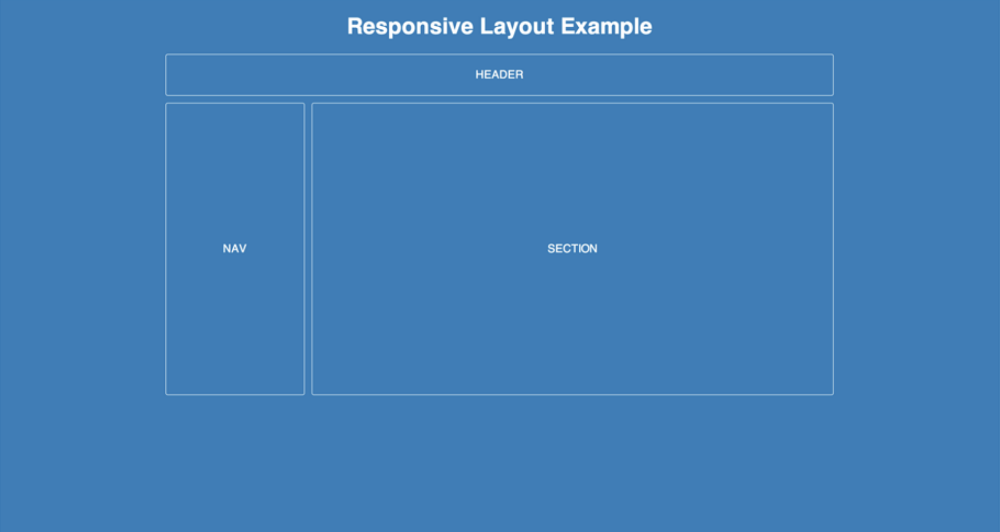
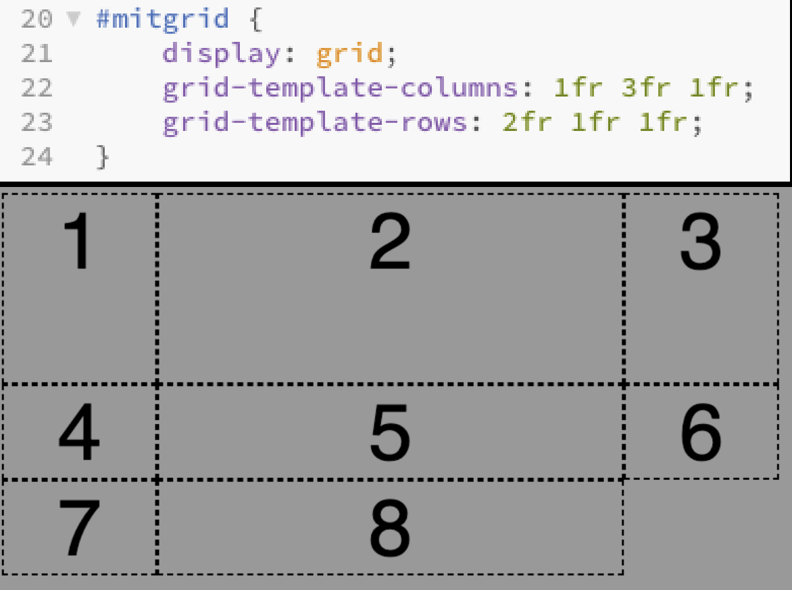

Når man starter med at tænke på Responsivitet skal man huske på at enheder har forskellige skærmstørrelser, og forskellige opløsninger.
1. Statisk (static, fixed witdth).
Ved statisk webdesign baseres layoutet på faste mål (fixed width)
Ændres ikke ved forskellige skærmstørrelser.
Ekstra plads på skærmen bliver til “luft” i siderne.
Fungerer som regel dårligt på andre skærmstørrelser end den tiltænkte.
2. flydende (fluid, liquid, flydende, elastisk).
Ved fluid Webdign tilpasser elementer sig bredden.
Angiver bredder relativt, typisk i procent.
Udnytter pladsen bedre.
3. Adaptiv (adaptive, ADW).
4. Responsiv (responsive, RWD)
Responsive layout Består typisk af et fluid layout.
Ikke specielt vanskeligt.
Tankegangen er MOBILE FIRST
Et grid er lavet til bedre at kunne holde orden og styr på hvor man vil placere ting.
Man angiver Grid-template-columns og Grid-template-rows. så kan man putte forskellige elementer ind i disse bredder og højder.
Et grid oprettes ved at definere en container-element som “grid” - men det påvirker ikke layoutet.
Enheden “fr” betyder fractions, altså dele som vidst på billedet under.
